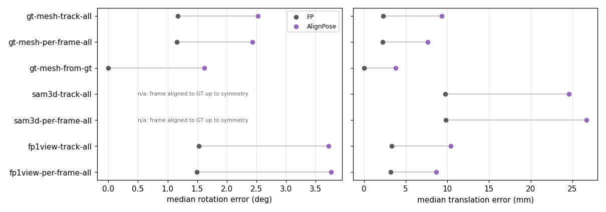
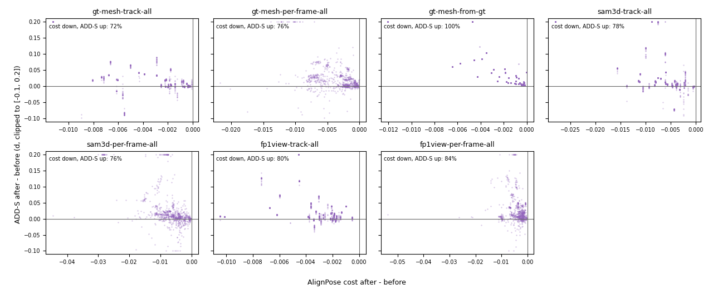
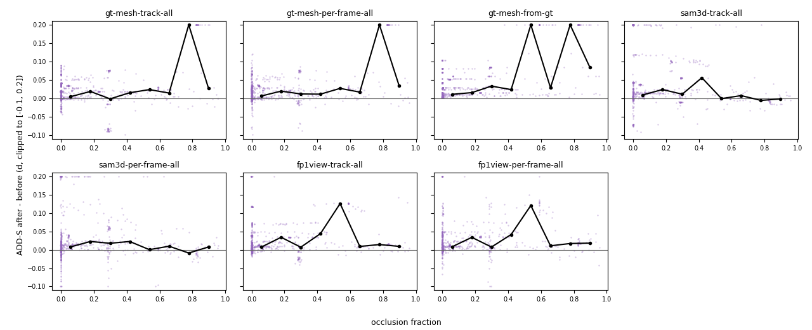

Models: GT mesh (run 1), FP model-free from 1 real view (run 2), SAM 3D (run 3).
FP start poses: track = FP tracks the object from the anchor frame; per-frame = FP estimates the pose from scratch in
every frame (FoundationPose "register"). all = AlignPose uses every graded frame as a view (FP-tracked motion as cameras):
track-all makes one correction shared by all frames, per-frame-all one refinement per frame.
from-gt = control started at the GT pose with GT motion. ADD-S in object diameters (d).
Rotation and translation error
Median over graded frames. SAM 3D rotation is left out: its model frame is aligned to GT only up to
symmetry (E011), so rotation error there is ~115° before and after and says nothing about the fit.

AlignPose's cost vs ADD-S
One dot per frame. Left of 0: AlignPose lowered its cost; above 0: the pose moved further from GT.

ADD-S change vs occlusion
One dot per frame; black line = median per occlusion bin (bins with ≥ 10 frames).
Occlusion = fraction of the object hidden by other objects (Kubric).

Per object
(← / → keys)
ADD-S per frame
Black = FP; blue = AlignPose (all views).
Solid = track, dashed = per-frame. Green line = success threshold (0.1 d).
Frames: GT / FP / AlignPose
Rows: GT mesh, SAM 3D, FP 1-view; track condition, all views.
Contours: green GT, yellow FP, magenta AlignPose.
Label: frame, ADD-S FP → AlignPose. Black = outside the camera frame (object partly out of view).
Object models
At the anchor frame's GT pose, front (top) and turned 180° (bottom).
Stats
AlignPose refinement
variant
frames
success FP → AlignPose
median ADD-S (d)
gained / lost
gt-mesh-track-all
877
0.887 → 0.842
0.011 → 0.031
0 / 40
gt-mesh-per-frame-all
877
0.892 → 0.855
0.011 → 0.030
1 / 33
gt-mesh-from-gt
877
1.000 → 0.919
0.000 → 0.015
0 / 71
sam3d-track-all
877
0.746 → 0.649
0.038 → 0.072
7 / 92
sam3d-per-frame-all
877
0.716 → 0.608
0.038 → 0.075
2 / 97
fp1view-track-all
877
0.828 → 0.747
0.015 → 0.036
0 / 71
fp1view-per-frame-all
877
0.857 → 0.786
0.015 → 0.035
4 / 67
Gained = FP failed, AlignPose succeeded; lost = the reverse. Success = ADD-S < 0.1 d.